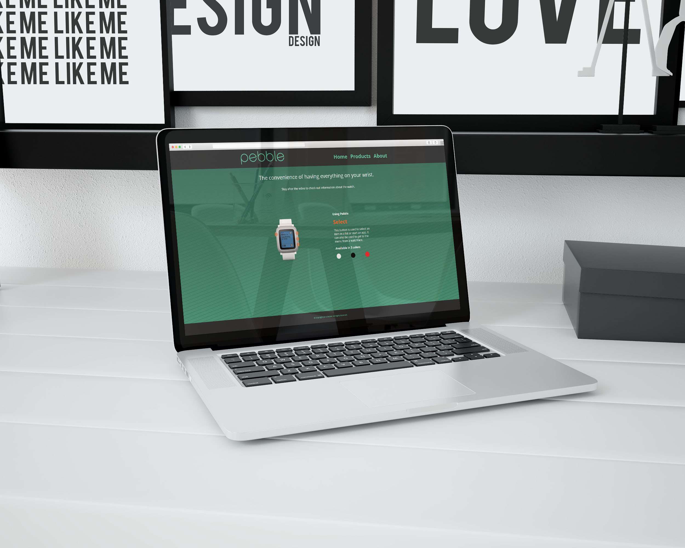

Project images and text
Web App Project
The idea for this project was to have a site that would play a video, and when the video was done, would show an interactive image. This was created using javascript, and incorporated the greensock.
View live site
